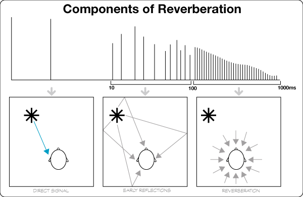
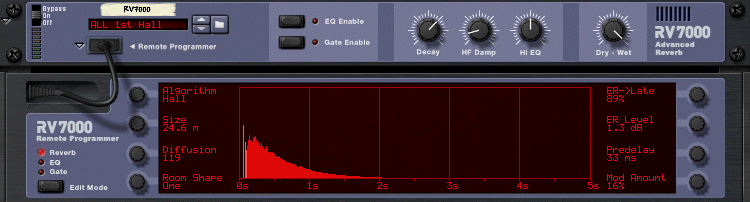

We use the sense of hearing to get many of our cues about the space around us. We can usually tell the size and shape of an acoustic space from these auditory cues. We can easily hear the difference between a room when it's empty and when it's filled with people, or one that's made of tile and cinder blocks and one that's has wood paneling and carpets.
We use reverb to artificially create a sense of space. In the physical world, all musical performances take place in some sort of room or hall. Since many of our instruments are virtual in desktop production, we'll need to use reverb to put them in some spatial perspective. We'll often want to place audio recordings in a space other than where they were originally recorded. We probably wouldn't want our vocalist, perhaps the next big pop diva, to sound like she was singing in a basement, now would we?
Spatialization created using reverb is the result of a direct, unprocessed signal being mixed with a number of closely spaced, random echoes. A combination of three factors gives us cues on what a particular space sounds like:
Take a look at the following diagram. We see each of these illustrated on a graph showing the number and level of reflected sound over time.

Components of Reverberation
What we also notice is that the loudest sound we hear is the direct sound, and as early reflections continue into reverberant sound, the number and density of reflections increases, while the loudness of the reflections decays.
RV7000
Take a look at the RV7000 reverb found in Reason. Compare the display in the Remote Programmer to the Components of Reverberation diagram above. Many current reverb units and plug-ins display parameters graphically. Additional controls allow you to simulate spaces of different size shape and material. In reflective surfaces, such as tile or brick, reflections will be brighter. Porous surfaces, such as carpeting and curtains will soak up higher frequencies so their reflections will sound duller. We can control this using the HF Damp and Hi EQ, two variations on spectrum filters.
